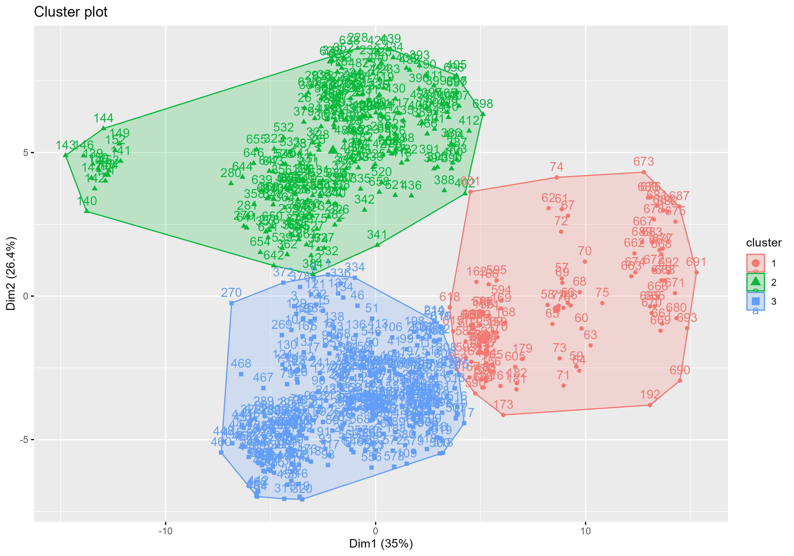
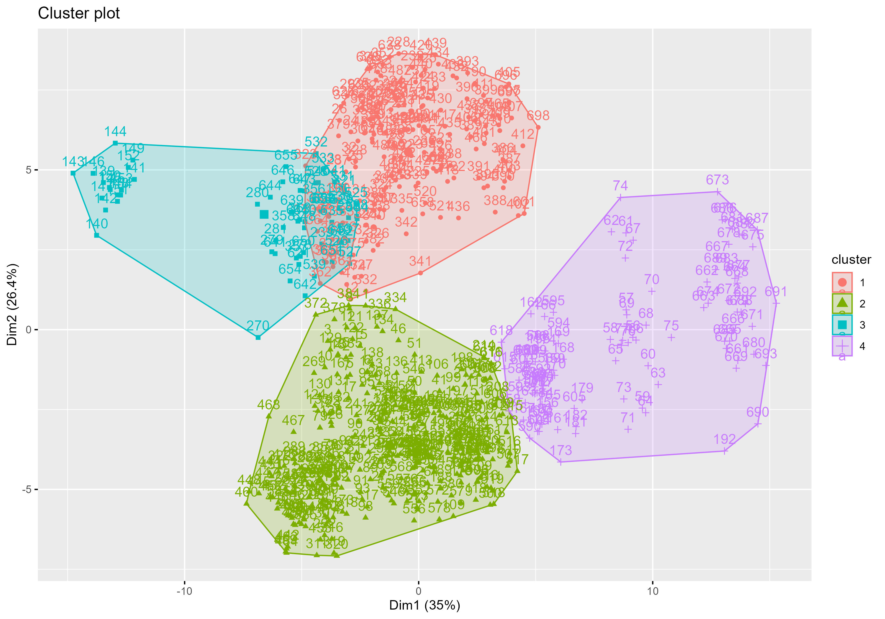
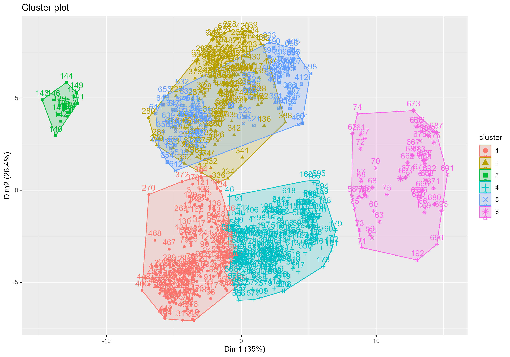
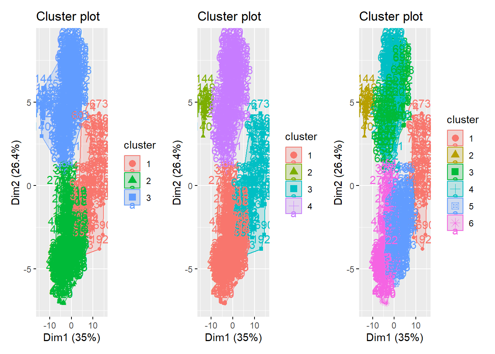

#install.packages("ggcorrplot")
#install.packages("factoextra")
#install.packages("ggpmisc")
library(tidyverse)
library(ggcorrplot)
library(broom)
library(car)
library(factoextra)
library(ggpmisc)Multivariate - K-means
Learning objectives
Our learning objectives are to:
- Run k-means for clustering
Setup
weather <- read_csv("../data/weather_monthsum.csv")
weather# A tibble: 698 × 75
site year strength_gtex mean_dayl.s_Jan mean_srad.wm2_Jan mean_tmax.c_Jan
<chr> <dbl> <dbl> <dbl> <dbl> <dbl>
1 Altus,… 1980 25.3 35873. 242. 10.2
2 Altus,… 1982 26.9 35873. 271. 12.6
3 Altus,… 1983 28.6 35873. 245. 9.9
4 Altus,… 1984 28.2 35873. 277. 10.3
5 Altus,… 1985 29.8 35873. 270. 8.1
6 Altus,… 1986 29 35873. 284. 16.3
7 Altus,… 1987 27.4 35873. 271. 9
8 Altus,… 1988 25.4 35873. 287. 8.1
9 Altus,… 1990 29.6 35873. 272. 15.8
10 Altus,… 1993 28.1 35873. 263. 7.3
# ℹ 688 more rows
# ℹ 69 more variables: mean_tmin.c_Jan <dbl>, mean_vp.pa_Jan <dbl>,
# sum_prcp.mm_Jan <dbl>, mean_dayl.s_Feb <dbl>, mean_srad.wm2_Feb <dbl>,
# mean_tmax.c_Feb <dbl>, mean_tmin.c_Feb <dbl>, mean_vp.pa_Feb <dbl>,
# sum_prcp.mm_Feb <dbl>, mean_dayl.s_Mar <dbl>, mean_srad.wm2_Mar <dbl>,
# mean_tmax.c_Mar <dbl>, mean_tmin.c_Mar <dbl>, mean_vp.pa_Mar <dbl>,
# sum_prcp.mm_Mar <dbl>, mean_dayl.s_Apr <dbl>, mean_srad.wm2_Apr <dbl>, …Since k-means only take numerical variables, let’s select them now.
weather_n <- weather %>%
dplyr::select(-c(site:strength_gtex))
weather_n# A tibble: 698 × 72
mean_dayl.s_Jan mean_srad.wm2_Jan mean_tmax.c_Jan mean_tmin.c_Jan
<dbl> <dbl> <dbl> <dbl>
1 35873. 242. 10.2 -1.5
2 35873. 271. 12.6 -5
3 35873. 245. 9.9 -2.1
4 35873. 277. 10.3 -4.8
5 35873. 270. 8.1 -4.9
6 35873. 284. 16.3 -2.6
7 35873. 271. 9 -3.4
8 35873. 287. 8.1 -4.8
9 35873. 272. 15.8 -0.9
10 35873. 263. 7.3 -2.6
# ℹ 688 more rows
# ℹ 68 more variables: mean_vp.pa_Jan <dbl>, sum_prcp.mm_Jan <dbl>,
# mean_dayl.s_Feb <dbl>, mean_srad.wm2_Feb <dbl>, mean_tmax.c_Feb <dbl>,
# mean_tmin.c_Feb <dbl>, mean_vp.pa_Feb <dbl>, sum_prcp.mm_Feb <dbl>,
# mean_dayl.s_Mar <dbl>, mean_srad.wm2_Mar <dbl>, mean_tmax.c_Mar <dbl>,
# mean_tmin.c_Mar <dbl>, mean_vp.pa_Mar <dbl>, sum_prcp.mm_Mar <dbl>,
# mean_dayl.s_Apr <dbl>, mean_srad.wm2_Apr <dbl>, mean_tmax.c_Apr <dbl>, …EDA
The EDA here is the same as for the PCA script, refer to that if needed.
summary(weather_n) #no NAs mean_dayl.s_Jan mean_srad.wm2_Jan mean_tmax.c_Jan mean_tmin.c_Jan
Min. :35192 Min. :199.4 Min. : 1.40 Min. :-10.4000
1st Qu.:35873 1st Qu.:247.4 1st Qu.:11.20 1st Qu.: -2.1750
Median :36359 Median :267.2 Median :13.80 Median : 0.5000
Mean :36311 Mean :269.1 Mean :13.87 Mean : 0.7394
3rd Qu.:36602 3rd Qu.:290.6 3rd Qu.:16.30 3rd Qu.: 3.3000
Max. :38022 Max. :339.1 Max. :25.20 Max. : 12.5000
mean_vp.pa_Jan sum_prcp.mm_Jan mean_dayl.s_Feb mean_srad.wm2_Feb
Min. : 176.2 Min. : 0.00 Min. :38306 Min. :239.0
1st Qu.: 484.9 1st Qu.: 15.93 1st Qu.:38668 1st Qu.:300.0
Median : 625.1 Median : 44.50 Median :38965 Median :325.0
Mean : 632.7 Mean : 62.97 Mean :38952 Mean :326.1
3rd Qu.: 773.7 3rd Qu.: 95.28 3rd Qu.:39113 3rd Qu.:353.3
Max. :1425.0 Max. :381.70 Max. :40029 Max. :419.1
mean_tmax.c_Feb mean_tmin.c_Feb mean_vp.pa_Feb sum_prcp.mm_Feb
Min. : 3.70 Min. :-9.100 Min. : 167.6 Min. : 0.00
1st Qu.:13.80 1st Qu.:-0.075 1st Qu.: 512.5 1st Qu.: 15.65
Median :16.75 Median : 2.600 Median : 708.0 Median : 50.10
Mean :16.49 Mean : 2.659 Mean : 698.8 Mean : 67.50
3rd Qu.:19.20 3rd Qu.: 5.200 3rd Qu.: 874.4 3rd Qu.: 96.45
Max. :27.60 Max. :15.300 Max. :1748.1 Max. :376.90
mean_dayl.s_Mar mean_srad.wm2_Mar mean_tmax.c_Mar mean_tmin.c_Mar
Min. :42340 Min. :308.0 Min. : 7.10 Min. :-7.500
1st Qu.:42427 1st Qu.:362.7 1st Qu.:18.43 1st Qu.: 3.700
Median :42467 Median :384.7 Median :20.80 Median : 5.900
Mean :42485 Mean :390.9 Mean :20.60 Mean : 6.117
3rd Qu.:42547 3rd Qu.:417.0 3rd Qu.:22.88 3rd Qu.: 8.200
Max. :42728 Max. :502.3 Max. :29.80 Max. :17.800
mean_vp.pa_Mar sum_prcp.mm_Mar mean_dayl.s_Apr mean_srad.wm2_Apr
Min. : 178.3 Min. : 0.00 Min. :45468 Min. :343.0
1st Qu.: 562.8 1st Qu.: 16.45 1st Qu.:46128 1st Qu.:407.2
Median : 885.0 Median : 58.55 Median :46253 Median :431.9
Mean : 844.4 Mean : 75.25 Mean :46239 Mean :439.8
3rd Qu.:1072.8 3rd Qu.:113.97 3rd Qu.:46444 3rd Qu.:476.0
Max. :2005.6 Max. :433.40 Max. :46823 Max. :596.6
mean_tmax.c_Apr mean_tmin.c_Apr mean_vp.pa_Apr sum_prcp.mm_Apr
Min. :10.90 Min. :-4.20 Min. : 196.4 Min. : 0.00
1st Qu.:23.30 1st Qu.: 8.00 1st Qu.: 601.5 1st Qu.: 9.45
Median :25.20 Median : 9.85 Median :1102.2 Median : 48.10
Mean :25.19 Mean :10.11 Mean :1038.5 Mean : 66.85
3rd Qu.:27.10 3rd Qu.:12.00 3rd Qu.:1362.0 3rd Qu.:108.72
Max. :34.90 Max. :20.90 Max. :2425.3 Max. :531.80
mean_dayl.s_May mean_srad.wm2_May mean_tmax.c_May mean_tmin.c_May
Min. :47828 Min. :323.7 Min. :17.00 Min. :-0.40
1st Qu.:49094 1st Qu.:397.0 1st Qu.:27.50 1st Qu.:13.00
Median :49364 Median :426.3 Median :29.20 Median :14.90
Mean :49374 Mean :436.9 Mean :29.37 Mean :14.99
3rd Qu.:49742 3rd Qu.:482.7 3rd Qu.:31.10 3rd Qu.:17.10
Max. :50442 Max. :561.3 Max. :38.60 Max. :24.10
mean_vp.pa_May sum_prcp.mm_May mean_dayl.s_Jun mean_srad.wm2_Jun
Min. : 288.8 Min. : 0.00 Min. :48996 Min. :328.6
1st Qu.: 761.5 1st Qu.: 12.00 1st Qu.:50593 1st Qu.:390.1
Median :1549.7 Median : 64.75 Median :50880 Median :415.9
Mean :1395.9 Mean : 79.63 Mean :50925 Mean :431.1
3rd Qu.:1881.9 3rd Qu.:128.60 3rd Qu.:51415 3rd Qu.:480.3
Max. :2822.1 Max. :381.70 Max. :52199 Max. :574.8
mean_tmax.c_Jun mean_tmin.c_Jun mean_vp.pa_Jun sum_prcp.mm_Jun
Min. :24.30 Min. : 4.30 Min. : 336.2 Min. : 0.00
1st Qu.:31.40 1st Qu.:18.00 1st Qu.: 971.9 1st Qu.: 12.30
Median :32.95 Median :19.70 Median :2117.1 Median : 61.90
Mean :33.38 Mean :19.29 Mean :1813.3 Mean : 74.98
3rd Qu.:35.20 3rd Qu.:21.10 3rd Qu.:2406.7 3rd Qu.:114.67
Max. :42.60 Max. :25.80 Max. :3056.1 Max. :399.20
mean_dayl.s_Jul mean_srad.wm2_Jul mean_tmax.c_Jul mean_tmin.c_Jul
Min. :48401 Min. :332.4 Min. :25.90 Min. : 6.90
1st Qu.:49888 1st Qu.:387.8 1st Qu.:32.90 1st Qu.:20.20
Median :50134 Median :411.2 Median :34.50 Median :21.50
Mean :50165 Mean :417.1 Mean :34.69 Mean :21.26
3rd Qu.:50627 3rd Qu.:446.6 3rd Qu.:36.20 3rd Qu.:22.80
Max. :51245 Max. :531.6 Max. :44.10 Max. :27.70
mean_vp.pa_Jul sum_prcp.mm_Jul mean_dayl.s_Aug mean_srad.wm2_Aug
Min. : 421.3 Min. : 0.00 Min. :46326 Min. :318.5
1st Qu.:1256.1 1st Qu.: 19.62 1st Qu.:47253 1st Qu.:383.1
Median :2418.7 Median : 53.60 Median :47411 Median :405.4
Mean :2061.7 Mean : 69.11 Mean :47427 Mean :409.5
3rd Qu.:2661.2 3rd Qu.:102.70 3rd Qu.:47725 3rd Qu.:437.1
Max. :3538.8 Max. :399.40 Max. :48087 Max. :496.9
mean_tmax.c_Aug mean_tmin.c_Aug mean_vp.pa_Aug sum_prcp.mm_Aug
Min. :25.40 Min. : 8.20 Min. : 532.6 Min. : 0.00
1st Qu.:32.30 1st Qu.:19.30 1st Qu.:1420.8 1st Qu.: 18.93
Median :34.30 Median :20.80 Median :2295.5 Median : 51.25
Mean :34.26 Mean :20.77 Mean :2055.3 Mean : 65.80
3rd Qu.:36.08 3rd Qu.:22.60 3rd Qu.:2551.8 3rd Qu.: 96.50
Max. :42.40 Max. :27.60 Max. :3382.9 Max. :503.40
mean_dayl.s_Sep mean_srad.wm2_Sep mean_tmax.c_Sep mean_tmin.c_Sep
Min. :43578 Min. :274.8 Min. :20.20 Min. : 3.90
1st Qu.:43723 1st Qu.:360.1 1st Qu.:29.40 1st Qu.:15.53
Median :43812 Median :383.5 Median :31.10 Median :17.10
Mean :43791 Mean :384.9 Mean :31.16 Mean :17.28
3rd Qu.:43845 3rd Qu.:410.6 3rd Qu.:32.80 3rd Qu.:19.20
Max. :43917 Max. :480.9 Max. :39.70 Max. :24.40
mean_vp.pa_Sep sum_prcp.mm_Sep mean_dayl.s_Oct mean_srad.wm2_Oct
Min. : 551.6 Min. : 0.00 Min. :39444 Min. :237.8
1st Qu.:1396.0 1st Qu.: 21.88 1st Qu.:39831 1st Qu.:314.5
Median :1849.6 Median : 56.90 Median :40029 Median :338.6
Mean :1741.9 Mean : 73.14 Mean :40045 Mean :337.7
3rd Qu.:2111.9 3rd Qu.:105.97 3rd Qu.:40160 3rd Qu.:361.4
Max. :3056.1 Max. :323.70 Max. :40845 Max. :423.8
mean_tmax.c_Oct mean_tmin.c_Oct mean_vp.pa_Oct sum_prcp.mm_Oct
Min. :15.30 Min. :-1.20 Min. : 414.2 Min. : 0.00
1st Qu.:23.80 1st Qu.: 9.00 1st Qu.:1015.6 1st Qu.: 13.22
Median :25.80 Median :10.90 Median :1249.3 Median : 49.60
Mean :25.78 Mean :11.17 Mean :1248.5 Mean : 71.53
3rd Qu.:27.70 3rd Qu.:13.10 3rd Qu.:1480.4 3rd Qu.:100.08
Max. :35.00 Max. :21.10 Max. :2524.8 Max. :411.60
mean_dayl.s_Nov mean_srad.wm2_Nov mean_tmax.c_Nov mean_tmin.c_Nov
Min. :35859 Min. :192.3 Min. : 7.50 Min. :-7.200
1st Qu.:36566 1st Qu.:252.7 1st Qu.:17.20 1st Qu.: 3.000
Median :36949 Median :274.9 Median :19.40 Median : 5.000
Mean :36940 Mean :274.8 Mean :19.45 Mean : 5.447
3rd Qu.:37224 3rd Qu.:298.2 3rd Qu.:21.50 3rd Qu.: 7.400
Max. :38508 Max. :349.9 Max. :28.90 Max. :18.300
mean_vp.pa_Nov sum_prcp.mm_Nov mean_dayl.s_Dec mean_srad.wm2_Dec
Min. : 265.0 Min. : 0.00 Min. :34194 Min. :163.3
1st Qu.: 704.1 1st Qu.: 13.20 1st Qu.:34978 1st Qu.:220.2
Median : 860.5 Median : 44.00 Median :35514 Median :242.6
Mean : 893.3 Mean : 65.45 Mean :35469 Mean :243.3
3rd Qu.:1048.4 3rd Qu.: 98.60 3rd Qu.:35800 3rd Qu.:266.1
Max. :2127.4 Max. :376.40 Max. :37398 Max. :322.7
mean_tmax.c_Dec mean_tmin.c_Dec mean_vp.pa_Dec sum_prcp.mm_Dec
Min. : 1.60 Min. :-11.600 Min. : 144.9 Min. : 0.00
1st Qu.:12.20 1st Qu.: -1.100 1st Qu.: 535.1 1st Qu.: 14.93
Median :14.40 Median : 1.400 Median : 672.8 Median : 48.50
Mean :14.44 Mean : 1.498 Mean : 689.1 Mean : 70.39
3rd Qu.:16.70 3rd Qu.: 3.900 3rd Qu.: 821.3 3rd Qu.:110.53
Max. :25.50 Max. : 15.100 Max. :1783.1 Max. :342.50 k-means
k-means is an unsupervised clustering algorithm and partitions the data into k groups, where k is defined by the user.
k-means works by
- randomly choosing k samples from our data to be the initial cluster centers
- calculates the distance of all observations to the clusters centers
- assigns a cluster class to each observation based on closest distance
- using all members of a cluster, recalculates cluster mean
- repeats the entire process until cluster means stabilize
knitr::include_graphics("https://miro.medium.com/max/960/1*KrcZK0xYgTa4qFrVr0fO2w.gif")
k-means:
- Is used for clustering
- Is an unsupervised analysis (no outcome)
- Only takes predictors
- Predictors need to be numerical
- Does not handle NAs
k-means is useful when clusters are circular, but can fail badly when clusters have odd shapes or outliers.
knitr::include_graphics("https://miro.medium.com/max/1400/1*oNt9G9UpVhtyFLDBwEMf8Q.png")
k-means does not normalize our data for us like PCA did, so we will need to do that before running the model.
# normalizing the data
weather_norm <- weather_n %>%
mutate(across(everything(), ~scale(.x)))
weather_norm# A tibble: 698 × 72
mean_dayl.s_Jan[,1] mean_srad.wm2_Jan[,1] mean_tmax.c_Jan[,1]
<dbl> <dbl> <dbl>
1 -0.699 -0.962 -0.904
2 -0.699 0.0654 -0.313
3 -0.699 -0.854 -0.978
4 -0.699 0.293 -0.880
5 -0.699 0.0365 -1.42
6 -0.699 0.527 0.598
7 -0.699 0.0834 -1.20
8 -0.699 0.631 -1.42
9 -0.699 0.0870 0.475
10 -0.699 -0.230 -1.62
# ℹ 688 more rows
# ℹ 69 more variables: mean_tmin.c_Jan <dbl[,1]>, mean_vp.pa_Jan <dbl[,1]>,
# sum_prcp.mm_Jan <dbl[,1]>, mean_dayl.s_Feb <dbl[,1]>,
# mean_srad.wm2_Feb <dbl[,1]>, mean_tmax.c_Feb <dbl[,1]>,
# mean_tmin.c_Feb <dbl[,1]>, mean_vp.pa_Feb <dbl[,1]>,
# sum_prcp.mm_Feb <dbl[,1]>, mean_dayl.s_Mar <dbl[,1]>,
# mean_srad.wm2_Mar <dbl[,1]>, mean_tmax.c_Mar <dbl[,1]>, …summary(weather_norm) # Mean = 0 mean_dayl.s_Jan.V1 mean_srad.wm2_Jan.V1 mean_tmax.c_Jan.V1
Min. :-1.7840734 Min. :-2.5126540 Min. :-3.0712033
1st Qu.:-0.6992058 1st Qu.:-0.7819588 1st Qu.:-0.6580142
Median : 0.0762234 Median :-0.0662441 Median :-0.0177804
Mean : 0.0000000 Mean : 0.0000000 Mean : 0.0000000
3rd Qu.: 0.4629815 3rd Qu.: 0.7747656 3rd Qu.: 0.5978291
Max. : 2.7278918 Max. : 2.5243904 Max. : 2.7893988
mean_tmin.c_Jan.V1 mean_vp.pa_Jan.V1 sum_prcp.mm_Jan.V1
Min. :-2.8440574 Min. :-2.000127 Min. :-1.056451
1st Qu.:-0.7440901 1st Qu.:-0.647772 1st Qu.:-0.789259
Median :-0.0611220 Median :-0.033045 Median :-0.309824
Mean : 0.0000000 Mean : 0.000000 Mean : 0.000000
3rd Qu.: 0.6537605 3rd Qu.: 0.617939 3rd Qu.: 0.542087
Max. : 3.0026601 Max. : 3.471513 Max. : 5.347766
mean_dayl.s_Feb.V1 mean_srad.wm2_Feb.V1 mean_tmax.c_Feb.V1
Min. :-1.6883608 Min. :-2.4675108 Min. :-3.0763659
1st Qu.:-0.7421130 1st Qu.:-0.7391528 1st Qu.:-0.6473441
Median : 0.0337997 Median :-0.0318076 Median : 0.0621227
Mean : 0.0000000 Mean : 0.0000000 Mean : 0.0000000
3rd Qu.: 0.4217561 3rd Qu.: 0.7704167 3rd Qu.: 0.6513409
Max. : 2.8140229 Max. : 2.6333049 Max. : 2.6715174
mean_tmin.c_Feb.V1 mean_vp.pa_Feb.V1 sum_prcp.mm_Feb.V1
Min. :-2.9175730 Min. :-1.996629 Min. :-1.021141
1st Qu.:-0.6783760 1st Qu.:-0.700365 1st Qu.:-0.784401
Median :-0.0146805 Median : 0.034733 Median :-0.263271
Mean : 0.0000000 Mean : 0.000000 Mean : 0.000000
3rd Qu.: 0.6304068 3rd Qu.: 0.659984 3rd Qu.: 0.437873
Max. : 3.1363226 Max. : 3.943916 Max. : 4.680282
mean_dayl.s_Mar.V1 mean_srad.wm2_Mar.V1 mean_tmax.c_Mar.V1
Min. :-1.7148502 Min. :-2.1399102 Min. :-3.809472
1st Qu.:-0.6839818 1st Qu.:-0.7268655 1st Qu.:-0.613409
Median :-0.2131353 Median :-0.1594528 Median : 0.056847
Mean : 0.0000000 Mean : 0.0000000 Mean : 0.000000
3rd Qu.: 0.7452037 3rd Qu.: 0.6739143 3rd Qu.: 0.642439
Max. : 2.8961160 Max. : 2.8770763 Max. : 2.596765
mean_tmin.c_Mar.V1 mean_vp.pa_Mar.V1 sum_prcp.mm_Mar.V1
Min. :-3.592408 Min. :-1.946199 Min. :-1.070326
1st Qu.:-0.637721 1st Qu.:-0.822989 1st Qu.:-0.836354
Median :-0.057336 Median : 0.118497 Median :-0.237556
Mean : 0.000000 Mean : 0.000000 Mean : 0.000000
3rd Qu.: 0.549431 3rd Qu.: 0.667320 3rd Qu.: 0.550766
Max. : 3.082020 Max. : 3.392444 Max. : 5.094020
mean_dayl.s_Apr.V1 mean_srad.wm2_Apr.V1 mean_tmax.c_Apr.V1
Min. :-2.7635066 Min. :-2.259987 Min. :-4.478129
1st Qu.:-0.3986392 1st Qu.:-0.760448 1st Qu.:-0.593362
Median : 0.0505995 Median :-0.183522 Median : 0.001885
Mean : 0.0000000 Mean : 0.000000 Mean : 0.000000
3rd Qu.: 0.7339587 3rd Qu.: 0.846535 3rd Qu.: 0.597132
Max. : 2.0913554 Max. : 3.663427 Max. : 3.040776
mean_tmin.c_Apr.V1 mean_vp.pa_Apr.V1 sum_prcp.mm_Apr.V1
Min. :-3.893329 Min. :-1.931240 Min. :-0.978983
1st Qu.:-0.574773 1st Qu.:-1.002354 1st Qu.:-0.840590
Median :-0.071549 Median : 0.146112 Median :-0.274567
Mean : 0.000000 Mean : 0.000000 Mean : 0.000000
3rd Qu.: 0.513278 3rd Qu.: 0.741901 3rd Qu.: 0.613275
Max. : 2.934192 Max. : 3.180213 Max. : 6.809133
mean_dayl.s_May.V1 mean_srad.wm2_May.V1 mean_tmax.c_May.V1
Min. :-2.7503367 Min. :-2.2112832 Min. :-4.202075
1st Qu.:-0.4992320 1st Qu.:-0.7789674 1st Qu.:-0.634840
Median :-0.0179196 Median :-0.2064318 Median :-0.057288
Mean : 0.0000000 Mean : 0.0000000 Mean : 0.000000
3rd Qu.: 0.6540679 3rd Qu.: 0.8956502 3rd Qu.: 0.588212
Max. : 1.8993258 Max. : 2.4315305 Max. : 3.136237
mean_tmin.c_May.V1 mean_vp.pa_May.V1 sum_prcp.mm_May.V1
Min. :-4.502876 Min. :-1.8854204 Min. :-1.062549
1st Qu.:-0.581287 1st Qu.:-1.0803280 1st Qu.:-0.902418
Median :-0.025241 Median : 0.2618050 Median :-0.198505
Mean : 0.000000 Mean : 0.0000000 Mean : 0.000000
3rd Qu.: 0.618603 3rd Qu.: 0.8276262 3rd Qu.: 0.653529
Max. : 2.667194 Max. : 2.4287852 Max. : 4.030974
mean_dayl.s_Jun.V1 mean_srad.wm2_Jun.V1 mean_tmax.c_Jun.V1
Min. :-2.7283375 Min. :-1.9426877 Min. :-3.129006
1st Qu.:-0.4687731 1st Qu.:-0.7761088 1st Qu.:-0.682031
Median :-0.0629853 Median :-0.2883357 Median :-0.147832
Mean : 0.0000000 Mean : 0.0000000 Mean : 0.000000
3rd Qu.: 0.6932684 3rd Qu.: 0.9337043 3rd Qu.: 0.627618
Max. : 1.8026763 Max. : 2.7255239 Max. : 3.177987
mean_tmin.c_Jun.V1 mean_vp.pa_Jun.V1 sum_prcp.mm_Jun.V1
Min. :-4.981602 Min. :-2.0053787 Min. :-1.069921
1st Qu.:-0.427955 1st Qu.:-1.1423695 1st Qu.:-0.894416
Median : 0.137096 Median : 0.4125133 Median :-0.186687
Mean : 0.000000 Mean : 0.0000000 Mean : 0.000000
3rd Qu.: 0.602432 3rd Qu.: 0.8056634 3rd Qu.: 0.566345
Max. : 2.164632 Max. : 1.6873747 Max. : 4.626152
mean_dayl.s_Jul.V1 mean_srad.wm2_Jul.V1 mean_tmax.c_Jul.V1
Min. :-2.7800400 Min. :-2.0827896 Min. :-3.282736
1st Qu.:-0.4374712 1st Qu.:-0.7205158 1st Qu.:-0.669129
Median :-0.0497748 Median :-0.1438854 Median :-0.071732
Mean : 0.0000000 Mean : 0.0000000 Mean : 0.000000
3rd Qu.: 0.7276668 3rd Qu.: 0.7247485 3rd Qu.: 0.563001
Max. : 1.7016358 Max. : 2.8154946 Max. : 3.512644
mean_tmin.c_Jul.V1 mean_vp.pa_Jul.V1 sum_prcp.mm_Jul.V1
Min. :-5.536412 Min. :-2.1647592 Min. :-1.075671
1st Qu.:-0.410426 1st Qu.:-1.0631193 1st Qu.:-0.770224
Median : 0.090611 Median : 0.4711133 Median :-0.241430
Mean : 0.000000 Mean : 0.0000000 Mean : 0.000000
3rd Qu.: 0.591647 3rd Qu.: 0.7912688 3rd Qu.: 0.522772
Max. : 2.480168 Max. : 1.9493582 Max. : 5.140669
mean_dayl.s_Aug.V1 mean_srad.wm2_Aug.V1 mean_tmax.c_Aug.V1
Min. :-2.8756474 Min. :-2.4543268 Min. :-3.220312
1st Qu.:-0.4550230 1st Qu.:-0.7125616 1st Qu.:-0.712929
Median :-0.0403500 Median :-0.1090464 Median : 0.013848
Mean : 0.0000000 Mean : 0.0000000 Mean : 0.000000
3rd Qu.: 0.7790668 3rd Qu.: 0.7439667 3rd Qu.: 0.658863
Max. : 1.7239047 Max. : 2.3576113 Max. : 2.957298
mean_tmin.c_Aug.V1 mean_vp.pa_Aug.V1 sum_prcp.mm_Aug.V1
Min. :-4.639305 Min. :-2.2605704 Min. :-1.074455
1st Qu.:-0.543076 1st Qu.:-0.9419649 1st Qu.:-0.765424
Median : 0.010468 Median : 0.3566725 Median :-0.237581
Mean : 0.000000 Mean : 0.0000000 Mean : 0.000000
3rd Qu.: 0.674721 3rd Qu.: 0.7371816 3rd Qu.: 0.501317
Max. : 2.519870 Max. : 1.9710522 Max. : 7.145686
mean_dayl.s_Sep.V1 mean_srad.wm2_Sep.V1 mean_tmax.c_Sep.V1
Min. :-2.7966746 Min. :-3.0120367 Min. :-3.928063
1st Qu.:-0.8958332 1st Qu.:-0.6777316 1st Qu.:-0.630232
Median : 0.2716954 Median :-0.0373712 Median :-0.020850
Mean : 0.0000000 Mean : 0.0000000 Mean : 0.000000
3rd Qu.: 0.7045992 3rd Qu.: 0.7056110 3rd Qu.: 0.588532
Max. : 1.6530522 Max. : 2.6280604 Max. : 3.061905
mean_tmin.c_Sep.V1 mean_vp.pa_Sep.V1 sum_prcp.mm_Sep.V1
Min. :-4.392829 Min. :-2.1663559 Min. :-1.132436
1st Qu.:-0.576582 1st Qu.:-0.6296385 1st Qu.:-0.793752
Median :-0.059542 Median : 0.1960047 Median :-0.251470
Mean : 0.000000 Mean : 0.0000000 Mean : 0.000000
3rd Qu.: 0.629845 3rd Qu.: 0.6734363 3rd Qu.: 0.508344
Max. : 2.336897 Max. : 2.3918351 Max. : 3.879317
mean_dayl.s_Oct.V1 mean_srad.wm2_Oct.V1 mean_tmax.c_Oct.V1
Min. :-2.0799595 Min. :-2.9285946 Min. :-3.369381
1st Qu.:-0.7407758 1st Qu.:-0.6799423 1st Qu.:-0.636716
Median :-0.0556201 Median : 0.0271120 Median : 0.006264
Mean : 0.0000000 Mean : 0.0000000 Mean : 0.000000
3rd Qu.: 0.3946942 3rd Qu.: 0.6924024 3rd Qu.: 0.617095
Max. : 2.7642055 Max. : 2.5226837 Max. : 2.963972
mean_tmin.c_Oct.V1 mean_vp.pa_Oct.V1 sum_prcp.mm_Oct.V1
Min. :-3.574826 Min. :-2.0096072 Min. :-0.964049
1st Qu.:-0.626716 1st Qu.:-0.5608868 1st Qu.:-0.785799
Median :-0.077558 Median : 0.0020295 Median :-0.295529
Mean : 0.000000 Mean : 0.0000000 Mean : 0.000000
3rd Qu.: 0.558309 3rd Qu.: 0.5586228 3rd Qu.: 0.384785
Max. : 2.870552 Max. : 3.0742225 Max. : 4.583592
mean_dayl.s_Nov.V1 mean_srad.wm2_Nov.V1 mean_tmax.c_Nov.V1
Min. :-1.8957293 Min. :-2.6563609 Min. :-3.435719
1st Qu.:-0.6554959 1st Qu.:-0.7119440 1st Qu.:-0.647829
Median : 0.0166260 Median : 0.0043354 Median :-0.015524
Mean : 0.0000000 Mean : 0.0000000 Mean : 0.000000
3rd Qu.: 0.4980913 3rd Qu.: 0.7520023 3rd Qu.: 0.588040
Max. : 2.7496648 Max. : 2.4171506 Max. : 2.714885
mean_tmin.c_Nov.V1 mean_vp.pa_Nov.V1 sum_prcp.mm_Nov.V1
Min. :-3.356353 Min. :-1.977487 Min. :-0.997285
1st Qu.:-0.649370 1st Qu.:-0.595406 1st Qu.:-0.796153
Median :-0.118589 Median :-0.103396 Median :-0.326846
Mean : 0.000000 Mean : 0.000000 Mean : 0.000000
3rd Qu.: 0.518348 3rd Qu.: 0.488070 3rd Qu.: 0.505108
Max. : 3.411104 Max. : 3.884142 Max. : 4.738017
mean_dayl.s_Dec.V1 mean_srad.wm2_Dec.V1 mean_tmax.c_Dec.V1
Min. :-1.8013840 Min. :-2.6423723 Min. :-3.277695
1st Qu.:-0.6937959 1st Qu.:-0.7628055 1st Qu.:-0.571502
Median : 0.0641988 Median :-0.0256720 Median :-0.009839
Mean : 0.0000000 Mean : 0.0000000 Mean : 0.000000
3rd Qu.: 0.4683589 3rd Qu.: 0.7502581 3rd Qu.: 0.577354
Max. : 2.7280650 Max. : 2.6207449 Max. : 2.824005
mean_tmin.c_Dec.V1 mean_vp.pa_Dec.V1 sum_prcp.mm_Dec.V1
Min. :-3.305944 Min. :-2.201135 Min. :-1.041309
1st Qu.:-0.655678 1st Qu.:-0.622579 1st Qu.:-0.820502
Median :-0.024662 Median :-0.065989 Median :-0.323777
Mean : 0.000000 Mean : 0.000000 Mean : 0.000000
3rd Qu.: 0.606354 3rd Qu.: 0.534793 3rd Qu.: 0.593851
Max. : 3.433305 Max. : 4.425361 Max. : 4.025802 Also, we need to define the number of clusters we want.
Any thoughts?
mod_km <- kmeans(weather_norm,
centers = 6,
nstart = 10
)
mod_kmK-means clustering with 6 clusters of sizes 16, 180, 207, 87, 152, 56
Cluster means:
mean_dayl.s_Jan mean_srad.wm2_Jan mean_tmax.c_Jan mean_tmin.c_Jan
1 -1.0092819 1.0677218 -1.5444919 -2.0781119
2 -0.9003107 -0.8149501 -0.9476243 -0.6009718
3 0.3475530 -0.2976567 0.1048657 0.3478756
4 -0.6820011 -0.3939200 0.7266118 0.8269052
5 0.2103551 1.0690739 0.1351500 -0.7088163
6 2.3860907 1.1248966 1.6039109 1.8788174
mean_vp.pa_Jan sum_prcp.mm_Jan mean_dayl.s_Feb mean_srad.wm2_Feb
1 -1.2494911 -0.1334433 -1.0010935 1.2373778
2 -0.2481626 0.3349884 -0.9004480 -0.6745154
3 0.5567871 0.6305792 0.3444753 -0.3622051
4 0.1594123 -0.4470572 -0.6804280 -0.1729300
5 -1.0509550 -0.8177597 0.2144954 1.0292102
6 1.7014733 -0.4553440 2.3818873 0.6285026
mean_tmax.c_Feb mean_tmin.c_Feb mean_vp.pa_Feb sum_prcp.mm_Feb
1 -1.87838914 -2.2492254 -1.2679678 -0.05886532
2 -0.93086355 -0.6236538 -0.2097128 0.42369504
3 0.05381567 0.3536497 0.6343856 0.56351195
4 0.75859709 0.7630175 0.2159583 -0.46253207
5 0.25404580 -0.6439343 -1.1646248 -0.80704233
6 1.46173056 1.9024160 1.5170101 -0.51891984
mean_dayl.s_Mar mean_srad.wm2_Mar mean_tmax.c_Mar mean_tmin.c_Mar
1 -0.7053839 1.4948552 -2.3313814 -2.6822586
2 -0.7038580 -0.7221317 -0.9076947 -0.5146085
3 0.2503933 -0.4647872 0.1134259 0.4677383
4 -0.5159902 0.1127640 0.5291484 0.3762855
5 0.2177543 1.1823468 0.3186367 -0.6910035
6 1.7489585 0.2276751 1.4774875 1.9824917
mean_vp.pa_Mar sum_prcp.mm_Mar mean_dayl.s_Apr mean_srad.wm2_Apr
1 -1.26287257 -0.3469864 1.0027222 1.54068513
2 -0.03029012 0.5137381 0.8731622 -0.73907577
3 0.78003550 0.5994461 -0.3413713 -0.60266740
4 -0.12112776 -0.5572602 0.6664643 0.69581336
5 -1.27927198 -0.8848255 -0.1866675 1.16072165
6 1.23532660 -0.5005591 -2.3599613 -0.06840402
mean_tmax.c_Apr mean_tmin.c_Apr mean_vp.pa_Apr sum_prcp.mm_Apr
1 -2.91756461 -3.18439562 -1.3581252 -0.6053572
2 -0.74356556 -0.28296386 0.2734324 0.6603336
3 -0.04397294 0.44796862 0.8527052 0.4984316
4 0.69795996 0.01177396 -0.5991999 -0.8543002
5 0.37989145 -0.66836698 -1.3025618 -0.7683772
6 1.27070028 1.95931728 0.8236070 -0.3791470
mean_dayl.s_May mean_srad.wm2_May mean_tmax.c_May mean_tmin.c_May
1 1.0113391 1.8401873 -2.5394889 -3.6395413
2 0.8947488 -0.6957684 -0.7588442 -0.1873394
3 -0.3470255 -0.6684080 -0.1299949 0.5251506
4 0.6795113 0.9932627 0.7604230 -0.3347158
5 -0.2032259 1.0693804 0.5980461 -0.5670391
6 -2.3862334 -0.2643553 0.8405875 1.7599607
mean_vp.pa_May sum_prcp.mm_May mean_dayl.s_Jun mean_srad.wm2_Jun
1 -1.5630854 -0.9396982 1.0104670 2.0799000
2 0.4279978 0.5919524 0.9003000 -0.7192678
3 0.8783097 0.5001081 -0.3482553 -0.6669477
4 -1.0295933 -0.9769769 0.6822112 1.2796236
5 -1.1896000 -0.6787160 -0.2102316 0.8612905
6 0.6527404 -0.1228001 -2.3844608 -0.1427758
mean_tmax.c_Jun mean_tmin.c_Jun mean_vp.pa_Jun sum_prcp.mm_Jun
1 -2.0972271 -4.26282409 -1.8919954 -0.96843475
2 -0.6475662 0.01540697 0.5913197 0.52306276
3 -0.3282290 0.45759681 0.7756199 0.48778903
4 1.0934826 -0.44323702 -1.3186985 -1.03319957
5 0.6580015 -0.44041940 -1.0127441 -0.56452669
6 0.4091383 1.36097784 0.5704454 -0.07021877
mean_dayl.s_Jul mean_srad.wm2_Jul mean_tmax.c_Jul mean_tmin.c_Jul
1 1.0053189 1.35086581 -2.3353036 -4.31272742
2 0.9016495 -0.74432689 -0.5415596 -0.01452138
3 -0.3467894 -0.55304394 -0.2196385 0.38944494
4 0.6818867 1.23018864 1.4114578 0.02105914
5 -0.2143083 0.78235657 0.2721633 -0.45708088
6 -2.3811765 0.01607986 0.2883054 1.04725952
mean_vp.pa_Jul sum_prcp.mm_Jul mean_dayl.s_Aug mean_srad.wm2_Aug
1 -1.9554737 -0.03014615 0.9905187 0.96160308
2 0.5965479 0.50274598 0.8981079 -0.66553914
3 0.7456278 0.31267782 -0.3417617 -0.57832661
4 -1.3665228 -0.91333826 0.6770602 1.23895539
5 -0.9563212 -0.44765572 -0.2190250 0.74730282
6 0.6037911 -0.12914556 -2.3638478 0.04903315
mean_tmax.c_Aug mean_tmin.c_Aug mean_vp.pa_Aug sum_prcp.mm_Aug
1 -2.647974772 -4.0280997 -1.7679259 0.2570929
2 -0.543347850 -0.1244327 0.4735165 0.3217408
3 -0.033901300 0.4292366 0.7495133 0.3067152
4 1.268166307 0.0948784 -1.4547765 -0.8508381
5 -0.005277386 -0.5144279 -0.8067283 -0.2820354
6 0.672490580 1.2131094 0.6623724 -0.1540104
mean_dayl.s_Sep mean_srad.wm2_Sep mean_tmax.c_Sep mean_tmin.c_Sep
1 0.6307268 1.2833720 -2.44493542 -3.5967516
2 0.6455814 -0.6340223 -0.62326205 -0.2209458
3 -0.2259951 -0.3468034 0.01482258 0.4146395
4 0.4701888 0.9886271 1.35942644 0.1857244
5 -0.2099274 0.7050709 -0.09230640 -0.6128652
6 -1.5805849 -0.4964818 0.78568456 1.5800962
mean_vp.pa_Sep sum_prcp.mm_Sep mean_dayl.s_Oct mean_srad.wm2_Oct
1 -1.5941705 -0.2263104 -1.0036754 0.7587116
2 0.2495723 0.3199626 -0.8748921 -0.6917306
3 0.6479160 0.2014854 0.3418456 -0.3152318
4 -1.4149342 -0.9849231 -0.6675879 0.3654503
5 -0.6498800 -0.3257664 0.1877359 0.7989136
6 1.2204666 0.7058040 2.3628864 0.4356438
mean_tmax.c_Oct mean_tmin.c_Oct mean_vp.pa_Oct sum_prcp.mm_Oct
1 -2.49934847 -3.1141837 -1.51603180 -0.4081561
2 -0.80764145 -0.4139572 -0.01439395 0.3142791
3 0.03266655 0.3822379 0.56720953 0.5338516
4 1.12445784 0.3696087 -1.23254809 -0.8013962
5 0.02022342 -0.6170179 -0.55650355 -0.5392187
6 1.38752268 1.9079779 1.80812979 -0.1582913
mean_dayl.s_Nov mean_srad.wm2_Nov mean_tmax.c_Nov mean_tmin.c_Nov
1 -1.0113768 0.69385487 -2.30583313 -2.6364810
2 -0.8949910 -0.87621435 -0.74618717 -0.3533123
3 0.3470930 -0.21372493 0.14109488 0.4370640
4 -0.6796987 0.02392828 0.60852263 0.2441110
5 0.2035037 0.95551287 -0.03821388 -0.7963824
6 2.3863108 0.77746870 1.69406110 2.0557167
mean_vp.pa_Nov sum_prcp.mm_Nov mean_dayl.s_Dec mean_srad.wm2_Dec
1 -1.42768357 -0.4603620 -1.0104251 0.8338357
2 -0.08429324 0.4686575 -0.9003509 -0.8644285
3 0.54299794 0.5634884 0.3482574 -0.1489164
4 -0.97479818 -0.7404757 -0.6822332 -0.1881638
5 -0.71336721 -0.7233350 0.2103163 0.8512246
6 2.12240010 -0.3440419 2.3844087 1.0725993
mean_tmax.c_Dec mean_tmin.c_Dec mean_vp.pa_Dec sum_prcp.mm_Dec
1 -1.72673985 -2.2174421 -1.3794464 -0.3666807
2 -0.82254794 -0.4191171 -0.1699226 0.4240517
3 0.17380526 0.3922352 0.4968533 0.5901580
4 0.58058184 0.4514285 -0.3482289 -0.6611250
5 -0.03704871 -0.7803866 -0.8747945 -0.7158403
6 1.69338505 1.9477132 2.0191652 -0.4696345
Clustering vector:
[1] 2 2 2 5 2 2 2 2 2 2 2 5 2 2 2 2 2 2 2 2 2 2 5 5 5 5 5 5 5 5 5 5 5 5 5 5 3
[38] 2 2 3 3 3 3 3 3 3 3 3 3 3 3 3 3 2 3 6 6 6 6 6 6 6 6 6 6 6 6 6 6 6 6 6 6 6
[75] 6 6 6 2 2 2 2 2 2 2 2 2 2 2 2 2 2 2 2 2 2 2 2 2 3 3 3 3 3 3 3 3 3 3 3 3 3
[112] 3 3 3 3 3 3 3 3 3 3 2 2 2 2 2 2 2 2 2 2 2 2 2 2 2 2 2 1 1 1 1 1 1 1 1 1 1
[149] 1 1 1 1 1 1 3 3 3 3 3 3 3 3 3 3 3 3 3 3 3 3 3 3 3 3 3 3 3 3 3 3 3 3 3 3 3
[186] 3 3 3 3 4 4 6 3 3 3 3 3 3 3 3 3 3 3 3 3 3 3 3 3 3 3 3 3 3 3 3 3 3 3 5 5 5
[223] 5 5 5 5 5 5 5 5 5 5 5 5 5 5 5 4 4 2 2 2 2 2 2 3 2 2 3 3 2 2 2 3 2 2 3 2 2
[260] 2 2 3 2 3 3 2 3 2 2 2 2 2 3 3 2 3 3 5 5 5 5 2 2 2 2 2 2 2 2 2 2 2 2 2 2 2
[297] 2 2 2 2 2 2 2 2 2 2 2 2 2 2 2 2 2 2 2 2 2 2 2 2 4 2 5 5 5 5 5 5 5 5 5 5 5
[334] 5 5 5 5 5 5 5 5 5 5 5 5 5 5 5 5 5 5 5 5 5 5 4 4 4 5 4 5 5 5 5 5 5 5 5 5 5
[371] 5 2 5 5 5 5 5 2 5 5 5 5 5 2 2 4 4 5 4 4 4 2 4 4 4 4 4 4 4 4 4 4 4 4 4 4 4
[408] 4 4 4 4 4 3 3 2 2 5 5 5 5 5 5 5 5 5 5 5 5 5 5 5 5 5 5 5 5 5 5 5 5 5 2 4 2
[445] 2 2 2 2 2 2 2 2 2 2 2 2 2 2 2 2 2 2 2 2 4 4 2 2 2 2 2 2 2 2 2 3 2 5 5 5 5
[482] 5 5 5 5 5 5 5 5 5 5 5 5 5 3 3 3 3 3 3 3 3 3 3 3 3 3 3 3 3 3 3 3 3 3 3 3 3
[519] 3 4 4 4 4 2 4 4 4 4 4 4 4 4 4 4 4 4 4 4 4 4 4 3 2 2 3 3 2 2 2 3 2 3 3 3 3
[556] 3 3 3 2 3 3 3 3 3 3 3 3 3 3 3 3 3 3 3 3 3 2 3 3 3 2 2 2 2 2 3 3 3 3 3 3 3
[593] 3 3 3 3 3 3 3 3 4 3 3 3 3 3 3 3 3 3 3 3 3 3 3 3 3 3 3 3 4 2 5 5 5 5 5 5 5
[630] 5 5 5 5 5 5 5 5 5 4 4 4 4 4 4 4 4 4 4 4 4 4 4 4 4 4 4 4 4 4 4 6 6 6 6 6 6
[667] 6 6 6 6 6 6 6 6 6 6 6 6 6 6 6 6 6 6 6 6 6 6 6 6 6 6 6 4 4 4 4 4
Within cluster sum of squares by cluster:
[1] 300.8335 5450.7346 6482.7071 3160.8222 3420.5926 1825.4065
(between_SS / total_SS = 58.9 %)
Available components:
[1] "cluster" "centers" "totss" "withinss" "tot.withinss"
[6] "betweenss" "size" "iter" "ifault" Since the choice of k can be subjective, we will need to find an objective way to select the value of k that most properly represents our dataset.
# Total error x k
fviz_nbclust(weather_norm,
method = "wss",
k.max = 10,
FUNcluster = kmeans)
# Silhouette width
fviz_nbclust(weather_norm,
method = "s",
k.max = 10,
FUNcluster = kmeans) 
total error: k= 3-4 silhouette: k= 6
When we take 3 clusters
mod_km3 <- kmeans(weather_norm,
centers = 3,
nstart = 10)
mod_km4 <- kmeans(weather_norm,
centers = 4,
nstart = 10)
mod_km6 <- kmeans(weather_norm,
centers = 6,
nstart = 10)How many observations per cluster?
weather %>%
mutate(cluster = mod_km3$cluster) %>%
group_by(cluster) %>%
tally()# A tibble: 3 × 2
cluster n
<int> <int>
1 1 108
2 2 337
3 3 253Now how can we visually inspect the resutls of k-means?
We can either
add the cluster column to original dataset and explore the distribution of each variable against cluster id, OR
use a function that summarises all the original variables into PCs and plots the cluster ids.
weather %>%
mutate(cluster = mod_km3$cluster,
cluster = factor(cluster)) %>%
pivot_longer(!c(year,site,cluster)) %>%
ggplot(aes(x = cluster,
y = value,
color = cluster))+
geom_boxplot(show.legend = F)+
facet_wrap(~name, scales = "free_y", ncol = 6)
# ggsave("../output/clustervalidation.png",
# width = 10,
# height = 20) We could actually run ANOVA models for each original variable of the form
var ~ cluster,
for ex. mean_dayl.s_Jan ~ cluster and extract cluster mean and pairwise comparison to understand what variables had significant differences among clusters.
mod_km3_pca_cluster <- fviz_cluster(mod_km3,
data = weather_norm)
mod_km4_pca_cluster <- fviz_cluster(mod_km4,
data = weather_norm)
mod_km6_pca_cluster <- fviz_cluster(mod_km6,
data = weather_norm)
# ggsave("../output/mod_km3_pca_clusters.png",
# width = 10, height = 7, dpi = 300)Notice how, behind the scenes, the fviz_cluster function ran a PCA and is showing us a plot with PCs 1 and 2 on the axis (same result as we obtained on the PCA analysis).
Summary
In this exercise, we covered:
- When multivariate analysis can be used
- k-means for clustering
- How to validate results from k-means analysis
While selecting the k values, 5, 10 and 15 gave the same WSS describing the variability by 58.9%.
In the videos, when 4 clusters were used, WSS is 48.2%, while choosing 3 clusters, WSS has reduced to 41.8%.
knitr::include_graphics("C:\\Users\\kp98863\\OneDrive - University of Georgia\\2026Spring\\CRSS 8030\\06_multivar\\output\\mod_km3_pca_clusters.png")
With 4 clusters as well, kmeans did not do that well.
knitr::include_graphics("C:\\Users\\kp98863\\OneDrive - University of Georgia\\2026Spring\\CRSS 8030\\06_multivar\\output\\mod_km4_pca_clusters.png")
when 6 groups were taken, it didn’t do that well either.
knitr::include_graphics("C:\\Users\\kp98863\\OneDrive - University of Georgia\\2026Spring\\CRSS 8030\\06_multivar\\output\\mod_km6_pca_clusters.png")
Comparing all the results from k-means, mod3 did the best
library(patchwork)Warning: package 'patchwork' was built under R version 4.4.3mod_km3_pca_cluster + mod_km4_pca_cluster + mod_km6_pca_cluster